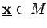
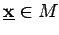
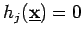

Inhalt Index DeskTop Bronstein

 Optimierung Nichtlineare Optimierung Problemstellung und theoretische Grundlagen Problemstellung
Optimierung Nichtlineare Optimierung Problemstellung und theoretische Grundlagen Problemstellung


Ein Punkt  heißt globaler Minimalpunkt, wenn für alle  gilt. Ist diese Beziehung nur für zulässige Punkte
heißt globaler Minimalpunkt, wenn für alle  gilt. Ist diese Beziehung nur für zulässige Punkte  aus einer Umgebung U von
aus einer Umgebung U von  erfüllt, dann ist
erfüllt, dann ist  ein lokaler Minimalpunkt. Aus den Kriterien für die Minimalpunkte ergeben sich die Optimalitätsbedingungen.
ein lokaler Minimalpunkt. Aus den Kriterien für die Minimalpunkte ergeben sich die Optimalitätsbedingungen.
Da die Gleichungsrestriktionen  durch die zwei Ungleichungen
| (18.33) |
beschrieben werden können, kann im folgenden von einer leeren Menge ausgegangen werden.